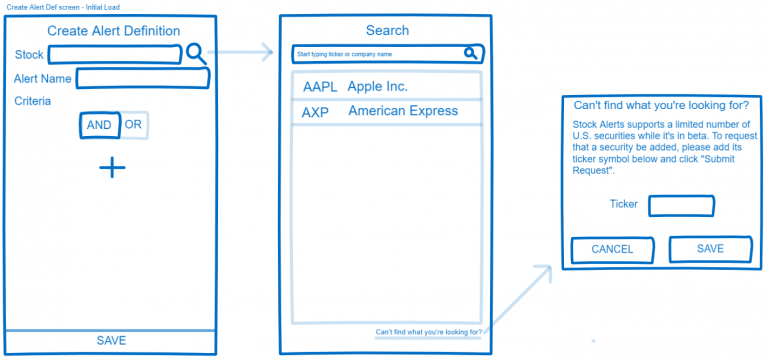

Stock Alerts Update
I’d been meaning to get this update out over the weekend, but a stomach bug visited our house and threw off my schedule. I’d like to get these updates out about once a week going forward, but since this is a side project and I’m working on it for fun in my off hours, I’m not going to sweat it too much.
Also, as I mentioned in my first post, these updates will be pretty informal and unpolished. I just want to talk in detail about some of the things I did in the past week on the project, and what I plan to do in the coming week.
Last Week
WRITING
With my announcement last weekend that I’ll be building Stock Alerts in public, I was compelled to write a few extra posts to lay some of the groundwork for project. I wrote the introductory post, spoke about the features, and laid out the infrastructure.
Naturally, this took some of my time away from development, but I think it was time well spent.
I have other posts that I want to write in the future to cover some of the work I’ve already done (particularly in the API), and I’ll try to work those in in the coming weeks without sacrificing too much dev time.
CREATE ALERT DEFINITION – STOCK SEARCH
I’ve been working on the Create Alert Definition screen in the Stock Alerts mobile app. This is where the user defines an alert, including selecting the stock and defining the alert criteria. Specifically, I was focused on the stock selection functionality last week (we’ll talk more about building the alert criteria in a couple weeks).
Here’s a wireframe for these screens:

I want the stock search feature to function like a typeahead search, allowing the user to type as much or as little of the stock symbol or company name as desired, and when they pause, the system retrieves the search results.
I already had an API endpoint for finding stocks based on a search string; I just needed to add CancellationToken support, which was as simple as adding it to the Azure function signature and plumbing it down to the data access layer:
[FunctionName("FindStocks")]
[HandleExceptions]
public async Task<IActionResult> FindStocksAsync(
[HttpTrigger(AuthorizationLevel.Anonymous, "get", Route = "stocks")] HttpRequest req,
CancellationToken cancellationToken,
ILogger log)
Implementing search on the mobile app side took a bit more work…
Thinking about this from an implementation perspective, my StockSearchPageViewModel needs to have a SearchString property that receives the input from the textbox, waits a second, and if there’s no additional input, execute the web request to get the search results from the API, which will populate a collection of results on the view model to which the view is bound. If additional input is received from the user while the web request is executing, we need to cancel it and issue a new request.
I can’t (shouldn’t) implement all of this in the SearchString property setter, because you can’t (and shouldn’t want to) make a property setter async. Property setters should be fast and non-blocking. And yet I want to be able to simply bind the Text property of my search box to a property on my view model.
I ended up using NotifyTask from Stephen Cleary’s Nito.Mvvm.Async library, which contains helpers for working with async methods in MVVM. NotifyTask is “essentially an INotifyPropertyChanged wrapper for Task/Task<T>,” as Stephen writes in this SO answer, which helped me quite a bit (the answer refers to NotifyTaskCompletion, which was replaced by NotifyTask).
So here’s my StockSearchPageViewModel implementation:
public class StockSearchPageViewModel : ViewModelBase
{
private readonly IStocksService _stocksService;
private CancellationTokenSource _searchCancellationTokenSource;
public StockSearchPageViewModel(
IStocksService stocksService,
INavigationService navigationService,
ILogger logger) : base(navigationService, logger)
{
_stocksService = stocksService ?? throw new ArgumentNullException(nameof(stocksService));
}
private string _searchString;
public string SearchString
{
get => _searchString;
set
{
_searchString = value;
var newSearchCancellationTokenSource = new CancellationTokenSource();
if (_searchCancellationTokenSource != null)
_searchCancellationTokenSource.Cancel();
_searchCancellationTokenSource = newSearchCancellationTokenSource;
Stocks = NotifyTask.Create(SearchStocksAsync(_searchCancellationTokenSource));
RaisePropertyChanged(nameof(SearchString));
}
}
private NotifyTask<List<Stock>> _stocks;
public NotifyTask<List<Stock>> Stocks
{
get => _stocks;
set
{
_stocks = value;
RaisePropertyChanged(nameof(Stocks));
}
}
private Stock _stock;
public Stock SelectedStock
{
get => _stock;
set
{
_stock = value;
var navigationParams = new NavigationParameters();
navigationParams.Add(NavigationParameterKeys.SelectedStock, _stock);
NavigationService.GoBackAsync(navigationParams);
}
}
private async Task<List<Stock>> SearchStocksAsync(CancellationTokenSource searchCancellationTokenSource)
{
if (SearchString.Length >= 1)
{
await Task.Delay(1000, searchCancellationTokenSource.Token);
try
{
if (!searchCancellationTokenSource.IsCancellationRequested)
{
var stocks = await _stocksService.FindStocksAsync(SearchString, searchCancellationTokenSource.Token);
return stocks.ToList();
}
}
finally
{
searchCancellationTokenSource.Dispose();
_searchCancellationTokenSource = null;
}
}
return new List<Stock>();
}
}
The view model creates and manages the cancellation token source, and cancels it when necessary, in the SearchString property setter. This is also where we create the NotifyTask, passing it a delegate for the SearchStocksAsync(..) method, which delays one second and calls the search API. The results of the SearchStocksAsync(..) method call are exposed as NotifyTask<List<Stock>> by the Stocks property.
In my StockSearchPage view, I can simply bind to the properties, like so:
<SearchBar Grid.Row="1" Placeholder="Start typing ticker or company name" Text="{Binding SearchString, Mode=TwoWay}"></SearchBar>
<ListView Grid.Row="2" ItemsSource="{Binding Stocks.Result}" SelectedItem="{Binding SelectedStock}">
<!--snip-->
</ListView>
… and with that, the typeahead stock search seems to be working pretty well.
HTTPCLIENTFACTORY
ASP.Net Core 2.1 introduced HttpClientFactory, which solves some of the problems developers run into when they create too many HttpClients in their projects. Steven Gordon has a nice write-up on HttpClientFactory and the problems it attempts to solve here.
The syntax to configure clients using HttpClientFactory is straightforward. In your ASP.NET Core Startup.cs:
services.AddHttpClient(Apis.SomeApi, c =>
{
c.BaseAddress = new Uri("https://api.someapi.com");
c.DefaultRequestHeaders.Add("Accept", "application/json");
});
Unfortunately, since Xamarin.Forms projects target .NET Standard, we can’t use any of the .NET Core goodies like HttpClientFactory. I wanted a similar pattern for configuring and creating my HttpClients in the mobile app, so I took some inspiration from here and created my own poor man’s HttpClientFactory.
Here’s my IHttpClientFactory interface:
public interface IHttpClientFactory
{
void AddHttpClient(string name, Action<HttpClient> configurationAction);
HttpClient CreateClient(string name);
}
And here’s my fairly naïve, yet adequate implementation:
public class HttpClientFactory : IHttpClientFactory, IDisposable
{
private readonly IDictionary<string, Action<HttpClient>> _configurations = new Dictionary<string, Action<HttpClient>>();
private readonly IDictionary<string, HttpClient> _clients = new Dictionary<string, HttpClient>();
public void AddHttpClient(string name, Action<HttpClient> configurationAction)
{
if (string.IsNullOrWhiteSpace(name)) throw new ArgumentNullException(nameof(name), $"{nameof(name)} must be provided.");
if (_configurations.ContainsKey(name)) throw new ArgumentNullException(nameof(name), $"A client with the name {name} has already been added.");
_configurations.Add(name, configurationAction);
}
public HttpClient CreateClient(string name)
{
if (!_clients.ContainsKey(name))
{
if (!_configurations.ContainsKey(name)) throw new ArgumentException($"A client by the name of {name} has not yet been registered. Call {nameof(AddHttpClient)} first.");
var httpClient = new HttpClient();
_configurations[name].Invoke(httpClient);
_clients.Add(name, httpClient);
}
return _clients[name];
}
public void Dispose()
{
foreach (var c in _clients)
{
c.Value.Dispose();
}
}
}
Finally, the registration of the factory with a single client in my App.xaml.cs:
IHttpClientFactory httpClientFactory = new HttpClientFactory();
httpClientFactory.AddHttpClient(
MiscConstants.StockAlertsApi,
c =>
{
c.BaseAddress = new Uri(MiscConstants.StockAlertsApiBaseUri);
c.DefaultRequestHeaders.Accept.Add(new MediaTypeWithQualityHeaderValue("application/json"));
});
containerRegistry.RegisterInstance(httpClientFactory);
This gives me a nice way to create and manage my HttpClients in my Xamarin.Forms project, and it will be easy to drop in the real HttpClientFactory if it ever becomes available for Xamarin.Forms projects.
Last week’s activities also included implementing a web service client base class for handling common tasks when communicating with the API, storing access and refresh tokens on the client, and working out my unauthorized/refresh token flow, but those are topics for another post. This one’s long enough.
This Week
This week’s already about half over, and we’ve got the 4th of July coming up. I plan to continue working on the Create Alert Definition screen, and perhaps by the next time I write I’ll have the functionality for building the alert criteria and saving the alert definition working – we’ll see.
Here’s the repository for the project if you’d like to follow along: https://github.com/jonblankenship/stock-alerts.
Thanks for reading, and Happy Fourth of July!
-Jon